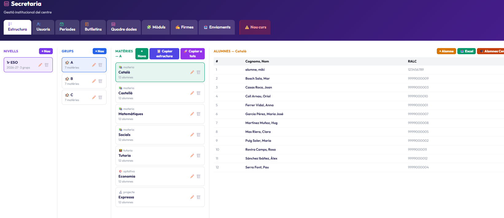
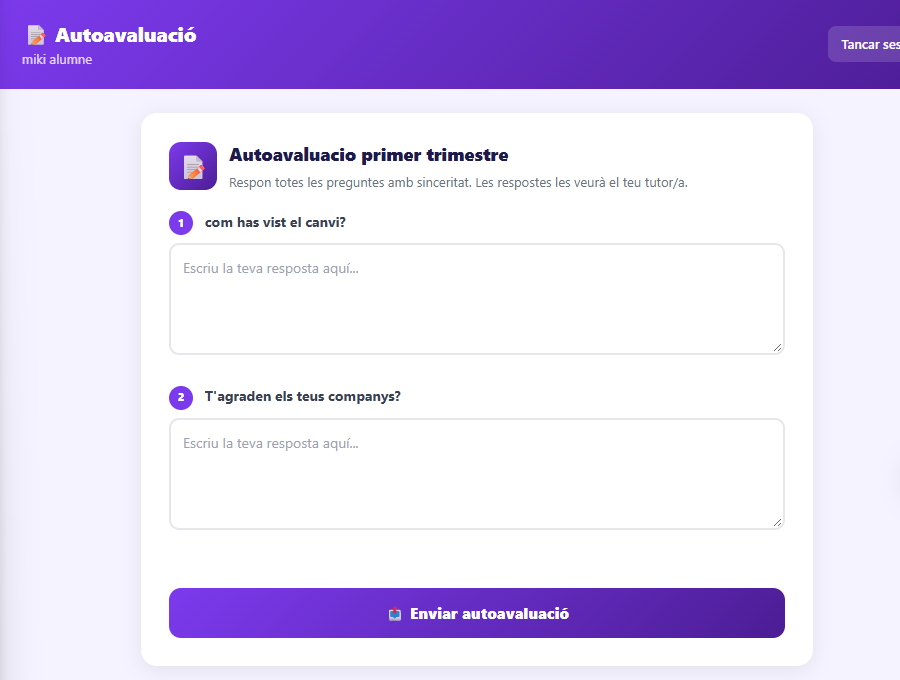

Comentaris per ítems
Plantilles compartides per matèria i ajuda de la intel·ligència artificial per redactar un primer esborrany, que el docent sempre revisa i fa seu.
Avaluació més senzilla per al vostre centre
Notia acompanya el professorat des del primer comentari fins al butlletí final i coordina tot el centre en una mateixa eina, amb les dades de l'alumnat xifrades.
Cada trimestre, els claustres dediquen moltes hores a escriure comentaris i muntar butlletins. Notia en simplifica les parts repetitives sense treure el criteri al docent.
Plantilles compartides per matèria i ajuda de la intel·ligència artificial per redactar un primer esborrany, que el docent sempre revisa i fa seu.
Els butlletins es generen a partir de l'avaluació ja introduïda. El docent avalua i comenta; Notia s'encarrega de muntar el document.
Secretaria organitza grups i matèries, la tutoria segueix el seu grup i la junta d'avaluació té les actes preparades. Cada perfil veu el que necessita.

Protecció de dades des del disseny
Els noms, els RALC i els correus de les famílies es xifren a l'ordinador del docent, amb una clau que només té el vostre centre, abans d'arribar a cap servidor.
Cada institut crea la seva clau. El proveïdor no la té i no la pot recuperar.
El servei d'IA mai no rep el nom real de l'alumne ni el seu RALC.
Cada institut té la seva pròpia base de dades, separada de la resta.

Els alumnes responen la seva autoavaluació amb el compte del centre. El tutor o tutora en revisa les respostes i les incorpora al butlletí com a comentari de l'alumne.
Sense instal·lacions ni equips. Notia funciona al navegador i nosaltres ens ocupem de l'allotjament, la seguretat i les actualitzacions.
Servei per centre
[PREU] / curs
No. Notia funciona al navegador, en ordinadors, tauletes i mòbils. Només cal el compte de Google del centre.
El centre. Nosaltres actuem com a encarregats del tractament, amb el contracte corresponent, i no podem llegir les dades identificatives perquè estan xifrades amb la clau del vostre centre.
No. Proposa un esborrany a partir dels ítems que tria el docent, sense rebre el nom real de l'alumne. El docent el revisa, el modifica i decideix el text final.
Us en lliurem una còpia completa i, un cop confirmada, s'esborra el vostre entorn. [Concretar el termini i el format.]
El preu inclou dues sessions de formació de 2 hores cadascuna, 4 hores en total: una per posar en marxa el centre amb Secretaria i l'equip directiu, i una altra per al claustre.
Notia porta un tutorial integrat, adaptat al perfil de cada persona (professorat, tutoria, Secretaria...), amb un assistent d'IA que respon els dubtes sobre com fer servir l'aplicació. I, si cal, teniu el suport per correu.
Sí. Us oferim una demostració i un entorn de prova amb dades fictícies perquè el claustre el pugui veure abans de decidir.
Expliqueu-nos com feu ara l'avaluació i us ensenyarem què canviaria amb Notia.
Demana una demostracióAquest lloc web només fa servir les galetes tècniques imprescindibles perquè funcioni. No fem servir galetes d'analítica ni de publicitat. Política de galetes